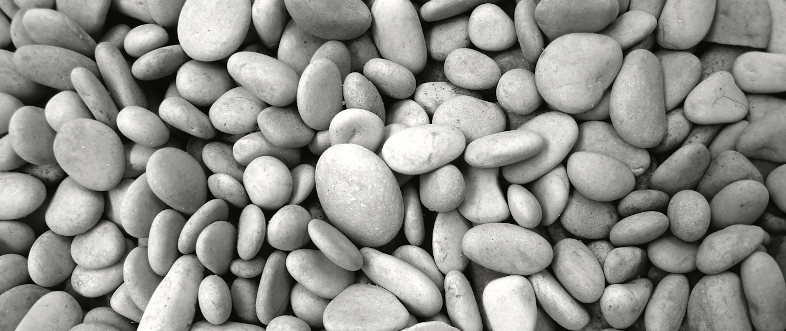

Education
University of California, Santa Barbara
 Masters in Environmental Science and Management | Sept 2022 - June 2024
Masters in Environmental Science and Management | Sept 2022 - June 2024
University of California, Santa Cruz
B.Sc. Ecology and Evolutionary Biology | Highest Honors 4.0 GPA| Sept 2017 - Dec 2020
B.A. Environmental Studies | Highest Honors 4.0 GPA| Sept 2017 - Dec 2020
Skills
Data Science and Management
R/RStudio, Python, Git/GitHub, SQL, Bash, Excel, Google Drive
Remote Sensing & Geospatial Analysis
R, QGIS, Python and Google Earth Engine
Machine Learning
R, Python, supervised/unsupervised, validation, training/testing, optimization, feature engineering, model evaluation
Data Visualization
Shiny app/dashboard, ggplot, Leaflet, Quarto, RMarkown, CSS, HTML, Javascript, Tableau
Experience
Data Analyst – NOAA Fisheries (Contract)
Remote (4/25-pres.)
- Developed reproducible data pipelines in R, incorporating statistical and machine learning methods to analyze sustainable fisheries data and assess the effectiveness of federally managed fisheries.
- Built interactive R Shiny dashboards, apps, and public web pages to communicate analytical findings and provide accessible fisheries data to stakeholders.
- Integrated SQL databases with R to create automated, robust workflows for data extraction, modeling, and reporting.
Data Analyst – Comunidad y Biodiversidad (Contract)
Remote (4/25-7/25.)
- Designed and deployed a server-based evaluation tool using R Shiny, enabling users to assess the effectiveness of marine protected areas across Mexico.
Data Manager – Masters Group Project
UCSB (3/23-6/24)
- Designed and spearheaded extensive geospatial analyses with 180k+ hectares of remotely sensed spatial and tabular data sets to model riparian habitat restoration requirements and generate cost estimates
- Leveraged zonal statistics, spatial subsets/joins, and raster/vector transformations with overlayed indigenous demographics to identify keys ecologically unique areas for recommended restoration
- Developed a user friendly and interactive Shiny dashboard (HTML and CSS) to visually present results and facilitate clear communication of key findings to NOAA restoration management and other stakeholders
Teaching Assistant – UCSB
UCSB (9/22-6/24)
- Applied Ecology | Environmental Chemistry | Environmental Ethics | Infectious Disease Ecology
Biosecurity Intern – The Nature Conservancy
Santa Barbara, CA (6/23-9-23)
- Led a comprehensive study including statistical analysis/modeling, GIS, report writing, fieldwork, and publication to address biosecurity weaknesses in the Channel Islands while mentoring an undergraduate
- Coded logistic regression models with environmental covariates measured using GIS to predict behavioral responses; performed model evaluations and feature engineering to optimize model performance
- Presented findings at the California Islands Symposium (publishing a first-authored scientific paper)
Data Analyst – Yoga Soup
Santa Barbara, CA (9/23-pres.)
- Programmed and executed a data management plan to distribute and archive terabytes of company data
- Coded automated reproducible pipelines in R to perform identification and relocation of sensitive data
Biologist – Mountain View Biological Consulting
Mammoth Lakes, CA (2/21–6/21)
- Mapped dozens of field sites in GIS, located access points and project perimeters, and communicated project logistics to senior biologists, project managers, and contractors
- Drafted environmental compliance reports for contractors, consultants, and land owners summarizing project description and biological activity within the region of interest (ROI)
Lab Technician – Sierra Nevada Aquatic Research laboratory
Mammoth Lakes, CA (1/21–6/22)
- Quantified 20+ years of long term acid mining drainage impacts on alpine stream biodiversity to inform US Forest Service on remediation success
- Identified and recorded 100,000’s of stream organisms in excel to manage over 20 years of project data
Research Technician – Palkovacs Lab UCSC
Santa Cruz, CA (9/2019-12-20)
- Secured $10,000’s in research grants to study the link between steelhead trout genotypes and prey selectivity on benthic macroinvertebrate (BMI) communities
- Designed a study measuring the ecological consequences of wildfires across 3 different watersheds in coastal California to inform land management of potential trophic cascades
Environmental Consultant Assistant – Laguna Geosciences
Laguna Beach, CA (seasonal 1/18-6/20)
- Organized and documented project data sets for senior management to ensure clients’ needs are met
REU Researcher – University of Puerto Rico
Rio Piedras, PR (6/19-9/19)
- Designed a research project measuring disturbance impacts on diversity of 25+ freshwater meiofauna taxa in proximity to highly developed areas in low income communities
- Collected hundreds of field samples, analyzed samples under the microscope, and reported findings to a committee of freshwater ecologists and Puerto Rican citizens in a research paper
Field Technician – Lyon Lab
UCSC (9/19-12-20)
- Documented hundreds of sparrow social interactions to provide data on the link between phenotypic hierarchical traits and social dominance within migrating flocks
Intern - Small Mammal Undergraduate Research in the Forest
UCSC (9/18-12/18)
- Trapped, tagged, and recorded hundreds of coastal California rodents and contributed results to long term metadata on mammal populations
- Worked intensive field days setting up transects, laying traps, and collecting field data in Monterey Bay
Certificates
- Google Data Analytics (9/2023)
Awards
- Bren Academic Excellence Recruitment Fellowship 2022 & 2023
- NRS Field Science Fellowship 2020
- Future Leaders in Coastal Science Award 2019
- Kathryn D. Sullivan Impact Award 2019
- Norris Center Student Natural History Award 2019
- Richard A. Cooley Award 2019
- Golden Key International Honors Society 2018
- The National Society of Collegiate Scholars 2017
- Honors Program UCSC
- UCSC Deans Honor Roll (2017-2020)